Humanitarian eXchange Language (HXL) Situation and Response Standard
- Namespace URI for the HXL Vocabulary:
- http://hxl.humanitarianresponse.info/ns/
- Revision:
- December 20, 2012
- Authors:
- Carsten Keßler
- CJ Hendrix
- Minu Limbu
- Further information:
- For further information about the HXL project, see https://sites.google.com/site/hxlproject/.
- Formats:
- Besides this human-readable form, the HXL vocabulary specification is also available in various machine-readable RDF serializations: RDF/XML | Turtle | N-Triples.
The XML Namespace URI that should be used by implementations of this version of the specification is: http://hxl.humanitarianresponse.info/ns/.
The preferred prefix for the vocabulary is hxl.
Introduction
Draft specification of the Humanitarian eXchange Language (HXL) standard. This vocabulary specification is currently under development and may change at any time without notice.
The purpose of HXL is to facilitate data exchange within the humanitarian domain. It provides a core domain model that has been created bottom-up by inspecting a broad range of systems in use with different humanitarian organisations. As needs vary widely across organisations in this domain, this vocabulary does not intend to be complete; in fact, it is the smallest common denominator. Any organisations that wish to publish full exports of their data can do so by extending this domain model with application- or organisation-specific models that reflect their internal data models (which may already be formalised in an XML schema or database schema).
The Humanitarian eXchange Language is defined as a set of classes and properties, using the Resource Description Framework (RDF) as underlying technology. This enables HXL to publish humanitarian data as part of the Linked Open Data cloud. We recommend Tim Berners-Lee's TED Talk as a quick introduction to Linked Data and RDF, and the Linked Data book by Tom Heath and Chris Bizer as a more in-depth, technical primer to the topic.
The following series of figures illustrates the basics of RDF and Linked Data that are required to understand this document.
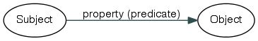RDF is based on statements of the form subject - predicate - object. Subject and object are illustrated as ellipses, the prediacte – or property – connects them and points from subject to object.
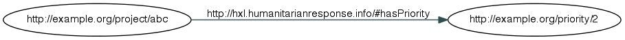URLs act as unique identifiers for subjects, properties and objects, as shown here. This way, more information about these can be found out by visiting the URLs. In case of the property, it should return its definition – again in RDF.
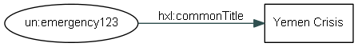Namespace declarations can be used to make the URLs more compact. In this standard, we only show the namespace prefix if the class or property has been defined in an external standard. Moreover, the object of a statement (or triple) can also be a literal, such as a string or a number. Literals are visualized as boxes.
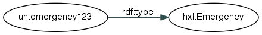Any subjects and (non-literal) objects should be typed. The classes defined in this standard declare the types that can be used for this purpose.
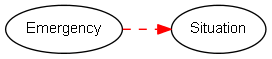The definitions of these classes are based on subclass hierarchies, indicated by a dotted red line in the figure. Emergency is a subclass of Situation, for example. Subclasses inherit from their superclasses, most importantly in terms of the domain and range of properties.
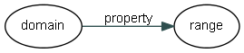The domain and range define the types of things between which a property can be used. Consider the property hasObjective, whose domain is defined as Humanitarian Activity. This states that whenever we see a statement using hasObjective as property, we can infere that the subject of this triple is a Humanitarian Activity. Likewise, its range is defined as Objective, so that we can infere that the object in any statement using hasObjective is an Objective. In the graphs shown in this standard, the property arrows point from domain to range (i.e., from kinds of subjects to kinds of objects).
The HXL vocabulary at a glance
An alphabetical index of all terms from the HXL vocabulary, by class and by property, is given below for quick reference. Click the terms for a more detailed description.
Classes | Affected Population Location | Administrative Unit | Administrative Unit Level | Affected Population | Age Group | Age Group Set | Approval Level | hxl:BaseClass | Casualties | Country | Data Container | Deaths | Displaced Population | Displaced Location Type | Displaced Persons Location Type Set | Distribution | Emergency | HXLer | Host Population | Internally Displaced Population | Incident | Injured | Missing | Need | Non-Displaced Population | Non-host Population | Organisation | Others of Concern | Populated Place Class | Populated Place | Population Group | Refugees and Asylum Seekers | Report Category | Report Category Set | Response | Sex Category | Situation | Source | System | Total Population | http://purl.org/dc/terms/PeriodOfTime | http://xmlns.com/foaf/0.1/Agent | http://xmlns.com/foaf/0.1/Group | http://xmlns.com/foaf/0.1/Organisation |
Properties | organisation abbreviation | about emergency | administrative unit level country | administrative unit level number | administrative unit level title | affected by | age group | approved at level | approved by | at level | at Location | comment | common title | count | date | description | displaced location type | feature alternate name | feature name | feature reference name | from age | FTS ID | has GLIDE number | household count | in class | method | nationality | organisation name for display | organisation name | native organisation name | organisation homepage | p-code | person count | place of origin | populated place class country | populated place class number | populated place class title | related information | report category | reported by | sex category | source | title | to age | valid on |
Cross-reference for all HXL classes and properties
The cross-reference is organized into thematic sections. Each section is illustrated by a graph of the respective classes and properties. The ellipses in the graph represent classes, whereas the arrows represent properties. Dashed lines indicate a subclass relationship (e.g. Emergency is a subclass of Situation). Solid lines are labeled with the property that connects these two classes. Grey ellipses indicate adjacent classes that are defined in a different section.
Jump directly to the different sections: | Geolocation Section | Humanitarian Profile Section | Metadata Section | Response Section | Situation Section |
Geolocation Section
This section of the vocabulary defines the geolocation standard. The draft HXL geolocation standard contains a detailed description of how to use the classes and properties.
Alphabetical index of all classes and properties in the Geolocation Section:
Classes | Affected Population Location | Administrative Unit | Administrative Unit Level | Country | Displaced Location Type | Displaced Persons Location Type Set | Populated Place Class | Populated Place |
Properties | administrative unit level country | administrative unit level number | administrative unit level title | at level | at Location | displaced location type | feature alternate name | feature name | feature reference name | in class | p-code | populated place class country | populated place class number | populated place class title |
Extended graph visualization of the Geolocation Section, including adjacent classes defined in a different section (in grey).
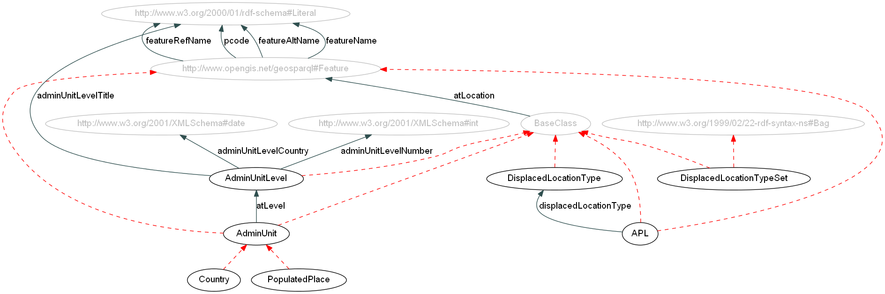[click to enlarge as SVG (with embedded hyperlinks) or PNG]
Classes
Affected Population Location Plural: Affected Population Locations.
Affected Population Location is a HXL top level concept.
Class. A site providing shelter for an affected population (such as refugees). Examples include camps and temporary settlements.
This class has been added for demo purposes only, a proper definition will be provided in subsequent versions of the vocabulary.
| Identifier: | APL |
|---|---|
| Subclass of: | http://www.opengis.net/ont/geosparql#Feature |
| Domain of: | displaced location type | at Location (via hxl:BaseClass) | comment (via hxl:BaseClass) | count (via hxl:BaseClass) | date (via hxl:BaseClass) | description (via hxl:BaseClass) | feature alternate name (via http://www.opengis.net/ont/geosparql#Feature) | feature name (via http://www.opengis.net/ont/geosparql#Feature) | feature reference name (via http://www.opengis.net/ont/geosparql#Feature) | p-code (via http://www.opengis.net/ont/geosparql#Feature) | title (via hxl:BaseClass) | |
| Range of: | at Location (via http://www.opengis.net/ont/geosparql#Feature) | place of origin (via http://www.opengis.net/ont/geosparql#Feature) | |
Administrative Unit Plural: Administrative Units.
Class. Administrative units can include coutries, regions, cities, etc. The hierarchy of administrative units can vary from country to country.
| Identifier: | AdminUnit |
|---|---|
| Subclass of: | http://www.opengis.net/ont/geosparql#Feature |
| Subclasses: | Country | Populated Place | |
| Domain of: | at level | at Location (via hxl:BaseClass) | comment (via hxl:BaseClass) | count (via hxl:BaseClass) | date (via hxl:BaseClass) | description (via hxl:BaseClass) | feature alternate name (via http://www.opengis.net/ont/geosparql#Feature) | feature name (via http://www.opengis.net/ont/geosparql#Feature) | feature reference name (via http://www.opengis.net/ont/geosparql#Feature) | p-code (via http://www.opengis.net/ont/geosparql#Feature) | title (via hxl:BaseClass) | |
| Range of: | at Location (via http://www.opengis.net/ont/geosparql#Feature) | place of origin (via http://www.opengis.net/ont/geosparql#Feature) | |
Administrative Unit Level Plural: Administrative Unit Levels.
Class. The specific administrative unit levels can vary from country to country. Administrative Unit Level 0 is a country – in this case, hxl:Country should be used.
| Identifier: | AdminUnitLevel |
|---|---|
| Domain of: | administrative unit level country | administrative unit level number | administrative unit level title | at Location (via hxl:BaseClass) | comment (via hxl:BaseClass) | count (via hxl:BaseClass) | date (via hxl:BaseClass) | description (via hxl:BaseClass) | title (via hxl:BaseClass) | |
| Range of: | at level | |
Country Plural: Countries.
Class. Highest-level administrative unit (level 0). This includes but is not limited to the three-letter country codes defined by ISO 3166-1, which may represent nations, dependent territories, and special areas of geographical interest. Instantiation of a hxl:Country object is for the administrative purposes of the Humanitarian Exchange Language and does not imply endoresement or recognition of any type by anybody.
| Identifier: | Country |
|---|---|
| Subclass of: | Administrative Unit |
| Domain of: | at level (via Administrative Unit) | at Location (via hxl:BaseClass) | comment (via hxl:BaseClass) | count (via hxl:BaseClass) | date (via hxl:BaseClass) | description (via hxl:BaseClass) | feature alternate name (via http://www.opengis.net/ont/geosparql#Feature) | feature name (via http://www.opengis.net/ont/geosparql#Feature) | feature reference name (via http://www.opengis.net/ont/geosparql#Feature) | p-code (via http://www.opengis.net/ont/geosparql#Feature) | title (via hxl:BaseClass) | |
| Range of: | nationality | populated place class country | at Location (via http://www.opengis.net/ont/geosparql#Feature) | place of origin (via http://www.opengis.net/ont/geosparql#Feature) | |
Displaced Location Type Plural: Displaced Location Types.
Class. Generic class for types of displaced locations; instances should be created for actual displaced location types and must have identifiers that do not start with a number. Examples: self-settled camp or collective centre. Each DisplacedLocationType should be added to at least one DisplacedLocationTypeSet following the conventions of rdfs:member.
| Identifier: | DisplacedLocationType |
|---|---|
| Domain of: | at Location (via hxl:BaseClass) | comment (via hxl:BaseClass) | count (via hxl:BaseClass) | date (via hxl:BaseClass) | description (via hxl:BaseClass) | title (via hxl:BaseClass) | |
| Range of: | displaced location type | |
Displaced Persons Location Type Set
Class. Generic class for classes describing the housing situation in which a displaced population is living. Subclasses of this class represent a coherent set of these location types which may vary from emergency to emergency. The individual types are instances of the subclass. DisplacedLocationTypes should be added to a DisplacedLocationTypeSet following the conventions of rdfs:member.
| Identifier: | DisplacedLocationTypeSet |
|---|---|
| Domain of: | at Location (via hxl:BaseClass) | comment (via hxl:BaseClass) | count (via hxl:BaseClass) | date (via hxl:BaseClass) | description (via hxl:BaseClass) | title (via hxl:BaseClass) | |
Populated Place Class Plural: Populated Place Classes.
Class. The classes of populated places can very country to country. This class refers to a specific instance of a single class used in a single country.
| Identifier: | PopPlaceClass |
|---|---|
| Domain of: | populated place class country | populated place class number | populated place class title | at Location (via hxl:BaseClass) | comment (via hxl:BaseClass) | count (via hxl:BaseClass) | date (via hxl:BaseClass) | description (via hxl:BaseClass) | title (via hxl:BaseClass) | |
| Range of: | in class | |
Populated Place Plural: Populated Places.
Class. Lowest-level administrative unit, such as a town or settlement. These are usually represented by point locations.
| Identifier: | PopulatedPlace |
|---|---|
| Subclass of: | Administrative Unit |
| Domain of: | in class | at level (via Administrative Unit) | at Location (via hxl:BaseClass) | comment (via hxl:BaseClass) | count (via hxl:BaseClass) | date (via hxl:BaseClass) | description (via hxl:BaseClass) | feature alternate name (via http://www.opengis.net/ont/geosparql#Feature) | feature name (via http://www.opengis.net/ont/geosparql#Feature) | feature reference name (via http://www.opengis.net/ont/geosparql#Feature) | p-code (via http://www.opengis.net/ont/geosparql#Feature) | title (via hxl:BaseClass) | |
| Range of: | at Location (via http://www.opengis.net/ont/geosparql#Feature) | place of origin (via http://www.opengis.net/ont/geosparql#Feature) | |
Properties
administrative unit level country
Property. Relates an administrative unit level to the country (or countries) that it can be used in.
| Identifier: | adminUnitLevelCountry |
|---|---|
| Domain: | Administrative Unit Level |
| Range: | http://www.w3.org/2001/XMLSchema#date |
administrative unit level number
Property. The number for this administrative unit level; e.g. 0 for country, 1 for state, etc.
| Identifier: | adminUnitLevelNumber |
|---|---|
| Domain: | Administrative Unit Level |
| Range: | http://www.w3.org/2001/XMLSchema#int |
administrative unit level title
Property. The title for this administrative unit level; e.g. state or city district.
| Identifier: | adminUnitLevelTitle |
|---|---|
| Domain: | Administrative Unit Level |
| Range: | http://www.w3.org/2000/01/rdf-schema#Literal |
at level
Property. Specifies the level for an administrative unit.
| Identifier: | atLevel |
|---|---|
| Domain: | Administrative Unit |
| Range: | Administrative Unit Level |
| Inverse property: | levelOf |
at Location
Property. Specififes the location for things like emergencies, projects, or affected population locations. This should be an administrative unit or other feature established in the HXL data repositiry (generally an Administrative Unit, Populated Place, or Affected Population Location agreed by the IM Working Group in a given emergency). It is also used to define the hierarchy of administrative units with each lower level admin unit requiring a hxl:atLocation property specifying the next higher level admin unit to which it belongs.
| Identifier: | atLocation |
|---|---|
| Domain: | hxl:BaseClass |
| Range: | http://www.opengis.net/ont/geosparql#Feature |
| Inverse property: | locationOf |
displaced location type
Property. Specifies the type of living situation in which a population is living.
| Identifier: | displacedLocationType |
|---|---|
| Domain: | Affected Population Location |
| Range: | Displaced Location Type |
| Inverse property: | displacedLocationTypeOf |
feature alternate name
Property. An alternative spelling of the feature. This is not the accepted spelling of the name for the humanitarian community and should be avoided.
| Identifier: | featureAltName |
|---|---|
| Domain: | http://www.opengis.net/ont/geosparql#Feature |
| Range: | http://www.w3.org/2000/01/rdf-schema#Literal |
feature name
Property. The common name of the feature. This is the accepted spelling of the name for the humanitarian community at the time of this version of the dataset.
| Identifier: | featureName |
|---|---|
| Domain: | http://www.opengis.net/ont/geosparql#Feature |
| Range: | http://www.w3.org/2000/01/rdf-schema#Literal |
feature reference name
Property. A version of the feature name in proper case without accented characters or apostrophes. Spaces and hyphens are allowed.
| Identifier: | featureRefName |
|---|---|
| Domain: | http://www.opengis.net/ont/geosparql#Feature |
| Range: | http://www.w3.org/2000/01/rdf-schema#Literal |
in class
Property. Specifies the class to which a populated place feature belongs. The classification systems vary country to country.
| Identifier: | inClass |
|---|---|
| Domain: | Populated Place |
| Range: | Populated Place Class |
p-code
Property. Specifies the unique identifier for an administrative unit or populated place. This is the preferred way of referencing these geographic features.
| Identifier: | pcode |
|---|---|
| Domain: | http://www.opengis.net/ont/geosparql#Feature |
| Range: | http://www.w3.org/2000/01/rdf-schema#Literal |
populated place class country
Property. Relates a populated place class to the country (or countries) that it can be used in.
| Identifier: | popPlaceClassCountry |
|---|---|
| Domain: | Populated Place Class |
| Range: | Country |
populated place class number
Property. A number used to indicate the classes place in the populated place class hierarchy. 1 should be used to represent larger or more important classes in the hierarchy, with higher numbers representing progressively smaller or less important classes in the hierarchy. The classification systesm vary by country.
| Identifier: | popPlaceClassNumber |
|---|---|
| Domain: | Populated Place Class |
| Range: | http://www.w3.org/2001/XMLSchema#int |
populated place class title
Property. The locally used title for a class of populated place; e.g. provincial capital, village, population 10,000 to 50,000.
| Identifier: | popPlaceClassTitle |
|---|---|
| Domain: | Populated Place Class |
| Range: | http://www.w3.org/2000/01/rdf-schema#Literal |
Humanitarian Profile Section
This section of the vocabulary defines the humanitarian profile standard which includes classes for describing populations affected by an emergency.
Alphabetical index of all classes and properties in the Humanitarian Profile Section:
Classes | Affected Population | Age Group | Age Group Set | Casualties | Deaths | Displaced Population | Host Population | Internally Displaced Population | Injured | Missing | Non-Displaced Population | Non-host Population | Others of Concern | Population Group | Refugees and Asylum Seekers | Sex Category | Total Population |
Properties | affected by | age group | from age | household count | method | nationality | person count | place of origin | sex category | source | to age |
Extended graph visualization of the Humanitarian Profile Section, including adjacent classes defined in a different section (in grey).
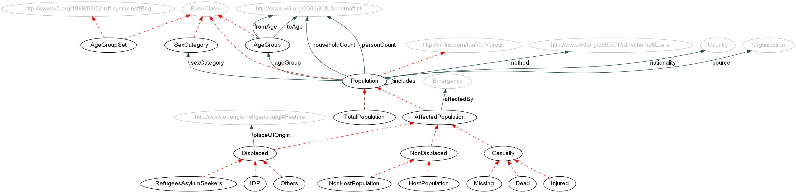[click to enlarge as SVG (with embedded hyperlinks) or PNG]
Classes
Affected Population Plural: Affected Populations.
Class. A population affected by an emergency.
Term origin: Humanitarian Profile (Affected);
| Identifier: | AffectedPopulation |
|---|---|
| Subclass of: | Population Group |
| Subclasses: | Casualties | Displaced Population | Non-Displaced Population | |
| Domain of: | affected by | age group (via Population Group) | at Location (via hxl:BaseClass) | comment (via hxl:BaseClass) | count (via hxl:BaseClass) | date (via hxl:BaseClass) | description (via hxl:BaseClass) | household count (via Population Group) | method (via Population Group) | nationality (via Population Group) | person count (via Population Group) | sex category (via Population Group) | source (via Population Group) | title (via hxl:BaseClass) | |
Age Group Plural: Age Groups.
Class. Generic class for age groups; instances should be created for actual age groups and must have an identifier that does not start with a number. Example: Children under 5. Each AgeGroup should be added to at least one AgeGroupSet following the conventions of rdfs:member.
| Identifier: | AgeGroup |
|---|---|
| Domain of: | from age | to age | at Location (via hxl:BaseClass) | comment (via hxl:BaseClass) | count (via hxl:BaseClass) | date (via hxl:BaseClass) | description (via hxl:BaseClass) | title (via hxl:BaseClass) | |
| Range of: | age group | |
Age Group Set Plural: Age Group Sets.
Class. Contains a set of bracketed age groups, usually defined as a standard by some authority. AgeGroups should be added to an AgeGroupSet following the conventions of rdfs:member.
| Identifier: | AgeGroupSet |
|---|---|
| Domain of: | at Location (via hxl:BaseClass) | comment (via hxl:BaseClass) | count (via hxl:BaseClass) | date (via hxl:BaseClass) | description (via hxl:BaseClass) | title (via hxl:BaseClass) | |
Casualties Plural: Casualties.
Class. Examples: Injured or dead.
Term origin: ACAPS DSS, Humanitarian Profile.
| Identifier: | Casualty |
|---|---|
| Subclass of: | Affected Population |
| Subclasses: | Deaths | Injured | Missing | |
| Domain of: | affected by (via Affected Population) | age group (via Population Group) | at Location (via hxl:BaseClass) | comment (via hxl:BaseClass) | count (via hxl:BaseClass) | date (via hxl:BaseClass) | description (via hxl:BaseClass) | household count (via Population Group) | method (via Population Group) | nationality (via Population Group) | person count (via Population Group) | sex category (via Population Group) | source (via Population Group) | title (via hxl:BaseClass) | |
Deaths / Dead Plural: Deaths.
Class. A (reported) death.
Term origin: ACAPS DSS, HPM Ethiopia, Shelter Cluster, Humanitarian Profile (Dead).
| Identifier: | Dead |
|---|---|
| Subclass of: | Casualties |
| Domain of: | affected by (via Affected Population) | age group (via Population Group) | at Location (via hxl:BaseClass) | comment (via hxl:BaseClass) | count (via hxl:BaseClass) | date (via hxl:BaseClass) | description (via hxl:BaseClass) | household count (via Population Group) | method (via Population Group) | nationality (via Population Group) | person count (via Population Group) | sex category (via Population Group) | source (via Population Group) | title (via hxl:BaseClass) | |
Displaced Population Plural: Displaced Populations.
Class. Refers to internally displaced persons, refugees, and others of concern.
Term origin: Humanitarian Profile, ACAPS DSS (Displacement)
| Identifier: | Displaced |
|---|---|
| Subclass of: | Affected Population |
| Subclasses: | Internally Displaced Population | Others of Concern | Refugees and Asylum Seekers | |
| Domain of: | place of origin | affected by (via Affected Population) | age group (via Population Group) | at Location (via hxl:BaseClass) | comment (via hxl:BaseClass) | count (via hxl:BaseClass) | date (via hxl:BaseClass) | description (via hxl:BaseClass) | household count (via Population Group) | method (via Population Group) | nationality (via Population Group) | person count (via Population Group) | sex category (via Population Group) | source (via Population Group) | title (via hxl:BaseClass) | |
Host Population Plural: Host Populations.
Class. Persons who are part of a host community or family receiving affected people. Due to the stress placed on the host families and communities, they are considered part of the humanitarian caseload.
Term origin: Humanitarian Profile.
| Identifier: | HostPopulation |
|---|---|
| Subclass of: | Non-Displaced Population |
| Domain of: | affected by (via Affected Population) | age group (via Population Group) | at Location (via hxl:BaseClass) | comment (via hxl:BaseClass) | count (via hxl:BaseClass) | date (via hxl:BaseClass) | description (via hxl:BaseClass) | household count (via Population Group) | method (via Population Group) | nationality (via Population Group) | person count (via Population Group) | sex category (via Population Group) | source (via Population Group) | title (via hxl:BaseClass) | |
Internally Displaced Population / IDP Plural: Internally Displaced Populations.
Class. A group of internally displaced persons (IDPs).
Term origin: Humanitarian Profile, CERF, HPM Ethiopia
| Identifier: | IDP |
|---|---|
| Subclass of: | Displaced Population |
| Domain of: | affected by (via Affected Population) | age group (via Population Group) | at Location (via hxl:BaseClass) | comment (via hxl:BaseClass) | count (via hxl:BaseClass) | date (via hxl:BaseClass) | description (via hxl:BaseClass) | household count (via Population Group) | method (via Population Group) | nationality (via Population Group) | person count (via Population Group) | place of origin (via Displaced Population) | sex category (via Population Group) | source (via Population Group) | title (via hxl:BaseClass) | |
Injured Plural: Injured.
Class. Indicates the Injured population.
Term origin: ACAPS DSS, Humanitarian Profile, Shelter Cluster, HERAMS Checklist (Injury)
| Identifier: | Injured |
|---|---|
| Subclass of: | Casualties |
| Domain of: | affected by (via Affected Population) | age group (via Population Group) | at Location (via hxl:BaseClass) | comment (via hxl:BaseClass) | count (via hxl:BaseClass) | date (via hxl:BaseClass) | description (via hxl:BaseClass) | household count (via Population Group) | method (via Population Group) | nationality (via Population Group) | person count (via Population Group) | sex category (via Population Group) | source (via Population Group) | title (via hxl:BaseClass) | |
Missing Plural: Missing.
Class. Associated with Missing Persons as a major humanitarian concern in complex emergencies where many people go missing, causing anguish and uncertainty for their families and friends. See ICRC .
Term origin: Humanitarian Profile.
| Identifier: | Missing |
|---|---|
| Subclass of: | Casualties |
| Domain of: | affected by (via Affected Population) | age group (via Population Group) | at Location (via hxl:BaseClass) | comment (via hxl:BaseClass) | count (via hxl:BaseClass) | date (via hxl:BaseClass) | description (via hxl:BaseClass) | household count (via Population Group) | method (via Population Group) | nationality (via Population Group) | person count (via Population Group) | sex category (via Population Group) | source (via Population Group) | title (via hxl:BaseClass) | |
Non-Displaced Population Plural: Non-Displaced Populations.
Class. Refers to the part of the affected population that is not displaced (i.e., host or non-host);.
Term origin: Humanitarian Profile.
| Identifier: | NonDisplaced |
|---|---|
| Subclass of: | Affected Population |
| Subclasses: | Host Population | Non-host Population | |
| Domain of: | affected by (via Affected Population) | age group (via Population Group) | at Location (via hxl:BaseClass) | comment (via hxl:BaseClass) | count (via hxl:BaseClass) | date (via hxl:BaseClass) | description (via hxl:BaseClass) | household count (via Population Group) | method (via Population Group) | nationality (via Population Group) | person count (via Population Group) | sex category (via Population Group) | source (via Population Group) | title (via hxl:BaseClass) | |
Non-host Population Plural: Non-host Populations.
Class. People requiring immediate assistance during a period of emergency who have not moved from their homes or places of habitual residence.
Term origin: Humanitarian Profile.
| Identifier: | NonHostPopulation |
|---|---|
| Subclass of: | Non-Displaced Population |
| Domain of: | affected by (via Affected Population) | age group (via Population Group) | at Location (via hxl:BaseClass) | comment (via hxl:BaseClass) | count (via hxl:BaseClass) | date (via hxl:BaseClass) | description (via hxl:BaseClass) | household count (via Population Group) | method (via Population Group) | nationality (via Population Group) | person count (via Population Group) | sex category (via Population Group) | source (via Population Group) | title (via hxl:BaseClass) | |
Others of Concern Plural: Others of Concern.
Class. Persons who have been displaced by the emergency and form part of the humanitarian caseload, but do not fall into the IDP or refugees/asylum seekers categories.
Term origin: Humanitarian Profile
| Identifier: | Others |
|---|---|
| Subclass of: | Displaced Population |
| Domain of: | affected by (via Affected Population) | age group (via Population Group) | at Location (via hxl:BaseClass) | comment (via hxl:BaseClass) | count (via hxl:BaseClass) | date (via hxl:BaseClass) | description (via hxl:BaseClass) | household count (via Population Group) | method (via Population Group) | nationality (via Population Group) | person count (via Population Group) | place of origin (via Displaced Population) | sex category (via Population Group) | source (via Population Group) | title (via hxl:BaseClass) | |
Population Group Plural: Population Groups.
Population Group is a HXL top level concept.
Class. Generic class for any kind of population. Example: Total population, affected population, etc.; use the subclasses for the data annotation.
| Identifier: | Population |
|---|---|
| Subclasses: | Affected Population | Total Population | |
| Domain of: | age group | household count | method | nationality | person count | sex category | source | at Location (via hxl:BaseClass) | comment (via hxl:BaseClass) | count (via hxl:BaseClass) | date (via hxl:BaseClass) | description (via hxl:BaseClass) | title (via hxl:BaseClass) | |
Refugees and Asylum Seekers Plural: Refugees and Asylum Seekers.
Class. A group of refugees and asylum seekers.
Term origin: Humanitarian Profile
| Identifier: | RefugeesAsylumSeekers |
|---|---|
| Subclass of: | Displaced Population |
| Domain of: | affected by (via Affected Population) | age group (via Population Group) | at Location (via hxl:BaseClass) | comment (via hxl:BaseClass) | count (via hxl:BaseClass) | date (via hxl:BaseClass) | description (via hxl:BaseClass) | household count (via Population Group) | method (via Population Group) | nationality (via Population Group) | person count (via Population Group) | place of origin (via Displaced Population) | sex category (via Population Group) | source (via Population Group) | title (via hxl:BaseClass) | |
Sex Category Plural: Sex Categories.
Class. Class to describe sex-specific issues, either at individual or group level.
Term origin: MIRA, CCDI
| Identifier: | SexCategory |
|---|---|
| Domain of: | at Location (via hxl:BaseClass) | comment (via hxl:BaseClass) | count (via hxl:BaseClass) | date (via hxl:BaseClass) | description (via hxl:BaseClass) | title (via hxl:BaseClass) | |
| Range of: | sex category | |
Total Population Plural: Total Populations.
Class. The total population for an administrative unit. Example: A region.
Term origin: Shelter Cluster.
| Identifier: | TotalPopulation |
|---|---|
| Subclass of: | Population Group |
| Domain of: | age group (via Population Group) | at Location (via hxl:BaseClass) | comment (via hxl:BaseClass) | count (via hxl:BaseClass) | date (via hxl:BaseClass) | description (via hxl:BaseClass) | household count (via Population Group) | method (via Population Group) | nationality (via Population Group) | person count (via Population Group) | sex category (via Population Group) | source (via Population Group) | title (via hxl:BaseClass) | |
Properties
affected by
Property. States that a Population is affacted by an Emergency.
| Identifier: | affectedBy |
|---|---|
| Domain: | Affected Population |
| Range: | Emergency |
| Inverse property: | affects |
age group
Property. Specifies the age group of the population.
| Identifier: | ageGroup |
|---|---|
| Domain: | Population Group |
| Range: | Age Group |
| Inverse property: | ageGroupOf |
from age
Property. Specifies the bottom of an age range for an AgeGroup (in years).
| Identifier: | fromAge |
|---|---|
| Domain: | Age Group |
| Range: | http://www.w3.org/2001/XMLSchema#int |
household count
Property. An estimate or count of the number of households in a population. The method by which the number was determined or estimated should also be reported using the hxl:method property.
| Identifier: | householdCount |
|---|---|
| Domain: | Population Group |
| Range: | http://www.w3.org/2001/XMLSchema#int |
method
Property. The method by which the person count or household count was derived.
Source: Humanitarian profile.
| Identifier: | method |
|---|---|
| Domain: | Population Group |
| Range: | http://www.w3.org/2000/01/rdf-schema#Literal |
nationality
Property. This item generally only applies to populations displaced across international borders and contains the nationality of the population being reported.
Term origin: Humanitarian profile.
| Identifier: | nationality |
|---|---|
| Domain: | Population Group |
| Range: | Country |
| Inverse property: | nationalityOf |
person count
Property. An estimate or count of the number of persons in a population. The range is intentionally not restricted to numeric values, so that rough numbers or estimates are supported.
| Identifier: | personCount |
|---|---|
| Domain: | Population Group |
| Range: | http://www.w3.org/2001/XMLSchema#int |
place of origin
Property. This attribute only applies to Displaced and its subclasses. It should include p-coded location from which the population being reported moved as a result of the emergency.
Term origin: Humanitarian profile.
| Identifier: | placeOfOrigin |
|---|---|
| Domain: | Displaced Population |
| Range: | http://www.opengis.net/ont/geosparql#Feature |
| Inverse property: | placeOfOriginOf |
sex category
Property. Specifies the sex of the population.
| Identifier: | sexCategory |
|---|---|
| Domain: | Population Group |
| Range: | Sex Category |
| Inverse property: | sexCategoryOf |
source
Property. The organisation(s) providing the information. Note that in some cases, if the source is the same for all records, this item could be reported as metadata for the dataset rather than for each record.
Source: Humanitarian profile.
| Identifier: | source |
|---|---|
| Domain: | Population Group |
| Range: | Source |
| Inverse property: | sourceOf |
to age
Property. Specifies the top of an age range for an AgeGroup (in years).
| Identifier: | toAge |
|---|---|
| Domain: | Age Group |
| Range: | http://www.w3.org/2001/XMLSchema#int |
Metadata Section
This section of the vocabulary defines the standards for metadata about a set of HXL data that is being exchanged. The draft HXL date/time standard contains a detailed description of how to use the classes and properties related to dates and timestamps.
Alphabetical index of all classes and properties in the Metadata Section:
Classes | Approval Level | Data Container | HXLer | Report Category | Report Category Set | Source | System | http://purl.org/dc/terms/PeriodOfTime |
Properties | about emergency | approved at level | approved by | comment | date | description | related information | report category | reported by | title | valid on |
Extended graph visualization of the Metadata Section, including adjacent classes defined in a different section (in grey).
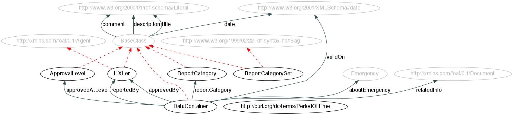[click to enlarge as SVG (with embedded hyperlinks) or PNG]
Classes
Approval Level Plural: Approval Levels.
Class. Instances of this class define fixed levels of approval in the HXL data repository.
| Identifier: | ApprovalLevel |
|---|---|
| Domain of: | at Location (via hxl:BaseClass) | comment (via hxl:BaseClass) | count (via hxl:BaseClass) | date (via hxl:BaseClass) | description (via hxl:BaseClass) | title (via hxl:BaseClass) | |
| Range of: | approved at level | |
Data Container Plural: Data Containers.
Class. This is the container element to attach any metadata to. Any HXL file has to include exactly one data container element and make all metadata statements about this container. When loading the file into the triple store, a new named graph will be created that inherits the metadata from this container.
| Identifier: | DataContainer |
|---|---|
| Domain of: | about emergency | approved at level | approved by | related information | report category | reported by | valid on | at Location (via hxl:BaseClass) | comment (via hxl:BaseClass) | count (via hxl:BaseClass) | date (via hxl:BaseClass) | description (via hxl:BaseClass) | title (via hxl:BaseClass) | |
HXLer Plural: HXLers.
Class. Superclass for any individuals or organizations interacting with HXL.
| Identifier: | HXLer |
|---|---|
| Subclass of: | http://xmlns.com/foaf/0.1/Agent |
| Domain of: | at Location (via hxl:BaseClass) | comment (via hxl:BaseClass) | count (via hxl:BaseClass) | date (via hxl:BaseClass) | description (via hxl:BaseClass) | title (via hxl:BaseClass) | |
| Range of: | approved by | reported by | source (via Source) | |
Report Category
Class. Instances of this class are specific report categories such as humanitrian profile, shelter or security. Each ReportCategory should be added to at least one ReportCategorySet following the conventions of rdfs:member.
| Identifier: | ReportCategory |
|---|---|
| Domain of: | at Location (via hxl:BaseClass) | comment (via hxl:BaseClass) | count (via hxl:BaseClass) | date (via hxl:BaseClass) | description (via hxl:BaseClass) | title (via hxl:BaseClass) | |
| Range of: | report category | |
Report Category Set
Class. A set of report categories that may be specific to an emergency. ReportCategories should be added to a ReportCategorySet following the conventions of rdfs:member
| Identifier: | ReportCategorySet |
|---|---|
| Domain of: | at Location (via hxl:BaseClass) | comment (via hxl:BaseClass) | count (via hxl:BaseClass) | date (via hxl:BaseClass) | description (via hxl:BaseClass) | title (via hxl:BaseClass) | |
Source Plural: Sources.
Class. Superclass for any source of information (HXLer, Organisation, etc.) provided by an HXL datacontainer.
| Identifier: | Source |
|---|---|
| Subclass of: | http://xmlns.com/foaf/0.1/Agent |
| Subclasses: | HXLer | Organisation | System | |
| Domain of: | at Location (via hxl:BaseClass) | comment (via hxl:BaseClass) | count (via hxl:BaseClass) | date (via hxl:BaseClass) | description (via hxl:BaseClass) | title (via hxl:BaseClass) | |
| Range of: | source | |
System Plural: Systems.
Class. A system (e.g. information system, database) providing HXL data.
| Identifier: | System |
|---|---|
| Subclass of: | Source |
| Domain of: | at Location (via hxl:BaseClass) | comment (via hxl:BaseClass) | count (via hxl:BaseClass) | date (via hxl:BaseClass) | description (via hxl:BaseClass) | title (via hxl:BaseClass) | |
| Range of: | source (via Source) | |
Properties
about emergency
Property. Links a DataContainer to the corresponding Emergency it contains data about.
| Identifier: | aboutEmergency |
|---|---|
| Domain: | Data Container |
| Range: | Emergency |
| Inverse property: | hasDataContainer |
approved at level
Property. A container can have approval at different levels, which may in turn indicate for which kind of analyses the data in this container is fit.
| Identifier: | approvedAtLevel |
|---|---|
| Domain: | Data Container |
| Range: | Approval Level |
| Inverse property: | approvalLevelOf |
approved by
Property. Link from a container to the person or organisation who has 'lifted' it to the current approvalLevel.
| Identifier: | approvedBy |
|---|---|
| Domain: | Data Container |
| Range: | HXLer |
| Inverse property: | approves |
comment
Property. Generic property for comments.
| Identifier: | comment |
|---|---|
| Domain: | hxl:BaseClass |
| Range: | http://www.w3.org/2000/01/rdf-schema#Literal |
date
Property. Generic property for date/time stamps (e.g., reporting time stamps for data containers) at arbitrary granularity.
| Identifier: | date |
|---|---|
| Domain: | hxl:BaseClass |
| Range: | http://www.w3.org/2001/XMLSchema#date |
description
Property. Generic property for descriptions.
| Identifier: | description |
|---|---|
| Domain: | hxl:BaseClass |
| Range: | http://www.w3.org/2000/01/rdf-schema#Literal |
report category
Property. Specifies the ReportCategory of a DataContainer.
| Identifier: | reportCategory |
|---|---|
| Domain: | Data Container |
| Range: | Report Category |
| Inverse property: | reportCategoryOf |
reported by
Property. The reporting person or organization - not necessarily involved in the aid activity itself, though in practice it often will be a donor or appealing agency.
Term origin: IATI.
| Identifier: | reportedBy |
|---|---|
| Domain: | Data Container |
| Range: | HXLer |
| Inverse property: | reporting |
title
Property. Generic property for titles.
| Identifier: | title |
|---|---|
| Domain: | hxl:BaseClass |
| Range: | http://www.w3.org/2000/01/rdf-schema#Literal |
valid on
Property. Property to express when a certain piece of data, such as a person count, was valid. Note that this may differ from the time when the data was reported; use hxl:date for these.
| Identifier: | validOn |
|---|---|
| Domain: | Data Container |
| Range: | http://www.w3.org/2001/XMLSchema#date |
Response Section
This section of the vocabulary defines the standards for response activities.
Alphabetical index of all classes and properties in the Response Section:
Classes | Organisation | Response | http://xmlns.com/foaf/0.1/Organisation |
Properties | organisation abbreviation | FTS ID | organisation name for display | organisation name | native organisation name | organisation homepage |
Extended graph visualization of the Response Section, including adjacent classes defined in a different section (in grey).
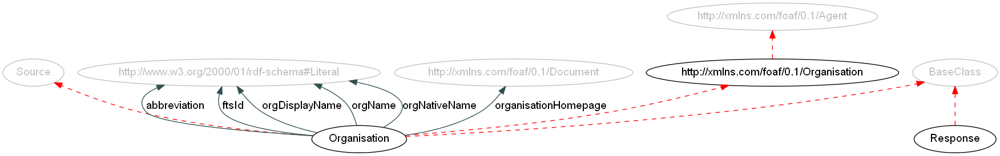[click to enlarge as SVG (with embedded hyperlinks) or PNG]
Classes
Organisation Plural: Organisations.
Class. A humanitarian organisation.
Term origin: IATI, CAP OPS, Pakistan SRF, EIMS Report, Shelter Cluster, Sigmah DB.
| Identifier: | Organisation |
|---|---|
| Subclass of: | http://xmlns.com/foaf/0.1/Organisation |
| Domain of: | organisation abbreviation | FTS ID | organisation name for display | organisation name | native organisation name | organisation homepage | at Location (via hxl:BaseClass) | comment (via hxl:BaseClass) | count (via hxl:BaseClass) | date (via hxl:BaseClass) | description (via hxl:BaseClass) | title (via hxl:BaseClass) | |
| Range of: | source (via Source) | |
Response
Class. Generic term for the collection of all activities that address the needs arising from an emergency.
Term origin: ACAPS DSS, ACAPS DSS, MIRA, EDXL, CCDI (Humanitarian Response), CERF (Humanitarian Response)
| Identifier: | Response |
|---|---|
| Domain of: | at Location (via hxl:BaseClass) | comment (via hxl:BaseClass) | count (via hxl:BaseClass) | date (via hxl:BaseClass) | description (via hxl:BaseClass) | title (via hxl:BaseClass) | |
foaf:Organisation
Class.
| Identifier: | http://xmlns.com/foaf/0.1/Organisation |
|---|---|
| Subclass of: | http://xmlns.com/foaf/0.1/Agent |
| Subclasses: | Organisation | |
Properties
organisation abbreviation
Property. Indicates the abbreviation of the Organisation. Term origin: FTS.
| Identifier: | abbreviation |
|---|---|
| Domain: | Organisation |
| Range: | http://www.w3.org/2000/01/rdf-schema#Literal |
FTS ID
Property. States the ID of the organisation in OCHA's Financial Tracking Service (FTS).
| Identifier: | ftsId |
|---|---|
| Domain: | Organisation |
| Range: | http://www.w3.org/2000/01/rdf-schema#Literal |
organisation name for display
Property. Indicates the organisation name that is most commonly used and displayed. Term origin: FTS.
| Identifier: | orgDisplayName |
|---|---|
| Domain: | Organisation |
| Range: | http://www.w3.org/2000/01/rdf-schema#Literal |
organisation name
Property. States the name of the organisation. Term origin: FTS.
| Identifier: | orgName |
|---|---|
| Domain: | Organisation |
| Range: | http://www.w3.org/2000/01/rdf-schema#Literal |
native organisation name
Property. Specifies the native name of the organisation. Term origin: FTS.
| Identifier: | orgNativeName |
|---|---|
| Domain: | Organisation |
| Range: | http://www.w3.org/2000/01/rdf-schema#Literal |
organisation homepage
Property. States the website of a given organisation. Term origin: FTS.
| Identifier: | organisationHomepage |
|---|---|
| Domain: | Organisation |
| Range: | http://xmlns.com/foaf/0.1/Document |
| Inverse property: | organisationHomepageOf |
Situation Section
This section of the vocabulary defines the standards for situations and emergencies.
Alphabetical index of all classes and properties in the Situation Section:
Classes | Emergency | Situation | http://xmlns.com/foaf/0.1/Agent | http://xmlns.com/foaf/0.1/Group |
Properties | common title | count | has GLIDE number |
Extended graph visualization of the Situation Section, including adjacent classes defined in a different section (in grey).
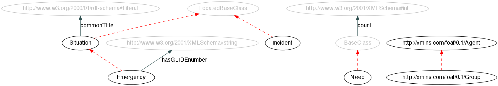[click to enlarge as SVG (with embedded hyperlinks) or PNG]
Classes
Emergency Plural: Emergencies.
Class.
Any situation in which life or well-being will be threatened unless immediate and appropriate action is taken, and which demands an extraordinary response and exceptional measures (from UNHCR Handbook for Emergencies).
Term origin: CAP OPS, Pakistan SRF, ACAPS DSS, CERF, MIRA.| Identifier: | Emergency |
|---|---|
| Subclass of: | Situation |
| Domain of: | has GLIDE number | at Location (via hxl:BaseClass) | comment (via hxl:BaseClass) | common title (via Situation) | count (via hxl:BaseClass) | date (via hxl:BaseClass) | description (via hxl:BaseClass) | title (via hxl:BaseClass) | |
| Range of: | about emergency | affected by | |
Situation Plural: Situations.
Class. Generic situation.
| Identifier: | Situation |
|---|---|
| Subclasses: | Emergency | |
| Domain of: | common title | at Location (via hxl:BaseClass) | comment (via hxl:BaseClass) | count (via hxl:BaseClass) | date (via hxl:BaseClass) | description (via hxl:BaseClass) | title (via hxl:BaseClass) | |
foaf:Agent
Class.
| Identifier: | http://xmlns.com/foaf/0.1/Agent |
|---|---|
| Subclasses: | HXLer | Source | http://xmlns.com/foaf/0.1/Group | http://xmlns.com/foaf/0.1/Organisation | |
foaf:Group
Class.
| Identifier: | http://xmlns.com/foaf/0.1/Group |
|---|---|
| Subclass of: | http://xmlns.com/foaf/0.1/Agent |
| Subclasses: | Population Group | |
Properties
common title
Property. A commonly use title/name for an emergency.
| Identifier: | commonTitle |
|---|---|
| Domain: | Situation |
| Range: | http://www.w3.org/2000/01/rdf-schema#Literal |
count
Property. Property to count people, things, etc. Subproperties should be used if possible to clarify what has been counted.
| Identifier: | count |
|---|---|
| Domain: | hxl:BaseClass |
| Range: | http://www.w3.org/2001/XMLSchema#int |
has GLIDE number
Property. Assigns the GLIDE number to an Emergency, i.e. a common unique ID code for disasters. See about GLIDE.
| Identifier: | hasGLIDEnumber |
|---|---|
| Domain: | Emergency |
| Range: | http://www.w3.org/2001/XMLSchema#string |
| Inverse property: | isGLIDEnumberOf |
Integrated graph overview of the complete HXL vocabulary
The following figure gives an overview of all classes and properties defined by HXL, and how they are connected. The ellipses represent classes, whereas the arrows represent properties: Dashed lines indicate a subclass relationship (e.g. Emergency is a subclass of Situation). Solid lines are labeled with the property that connects these two classes.
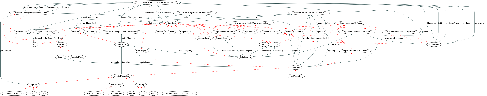[click to enlarge as SVG (with embedded hyperlinks) or PNG]
License
The HXL vocabulary is published under a Creative Commons Attribution license (CC BY 3.0).
 This Vocabulary Specification relies on W3C's RDF technology, an open Web standard that can be freely used by anyone.
This Vocabulary Specification relies on W3C's RDF technology, an open Web standard that can be freely used by anyone.
This visual layout and structure of the specification was adapted from the Open Provenance Model Vocabulary edited by Jun Zhao, SIOC Core Ontology Specification edited by Uldis Bojars and John G. Breslin and the Provenance Vocabulary Core Ontology Specification edited by Olaf Hartig and Jun Zhao.
Change log
Changes on December 20, 2012:
- More elobrate descriptions added for the top level concepts that are not formally defined yet.
- The URI of the GeoSPARQL ontology has been changed to be consistent with our data (even though the previous URI was also working).
- Added hxl:PopPlaceClass, hxl:inClass, hxl:popPlaceClassTitle, hxl:popPlaceClassNumber, and hxl:popPlaceClassCountry to handle the concept of rankings among populated places.
- hxl:atLocation is a transitive property now to make queries along the administrative unit hierarchy easier.
- Class hxl:Source added as a superclass for all things that can be sources of information (people, organisations, systems, etc.).
- Class hxl:System added as a new subclass hxl:Source. hxl:HXLer and hxl:Organisation are now also subclasses of hxl:Source.
- Class hxl:ReportingPeriod and its hxl:start and hxl:end properties have been removed; use hxl:validOn in the future.
- The set of top level concepts has been adjusted for our upcoming demo.
- Preferred labels for populations changed to the plural variants.
- The different validity properties have been replaced by hxl:validOn. This ensures a proper distinction between actual data and their metadata, which have to be attached to the enclosing data container.
- The preferred label of hxl:Population has been changed to Population Group.
- Property hxl:ftsId has been added.
- The properties validityStart and validityEnd were changed to validFrom and validUntil. These formerly had Baseclass as their domain, but these have been changed so that they only apply to those classes which need validity dates.
- The properties start and end have also had their domains changed from Baseclass to those classes which need start and end dates.
- The property currentLocation has been removed. Use atLocation instead.
- The properties featureName, featureAltName, and featureRefName have been made subproperties of title.
- The property inDisplacedLocationType has been replaced with displacedLocationType which now is in the domain of Affected Population Location
- Typo fixed: hxl:AFL replaced by hxl:APL.
- The class Camp has been renamed to Affected Population Location to comply with official terminology.
- The class Country is not a subclass of http://purl.org/ontology/places#Country any more, as the HXL definition of a country is different.
- The class GlideNumber has been removed. The property hasGLIDEnumber now links an Emergency directly to the corresponding GLIDE number, represented as a String.
- Plural for all classes added.
- currentLocation is now a subproperty of atLocation.
- The subclasses of SexCategory (male, female, etc.) have been removed. They will be moved to a reference list on the triple store as instances of SexCategory.
- Removed property hxl:inAdminUnit, which was formerly used to make the link between a hxl:AdminUnit and its parent in the hierarchy of administrative units. We now use the more generic hxl:atLocation property (inherited from the HXLBaseClass) for this.
- Modified defintion of hxl:Country.
- Modified definitions of hxl:AgeGroup and hxl:DisplacedLocationType to reflect the requirement that specific instances must have names that do not start with numbers.
- Link to date/time standard document added to Metadata Section.
- Added more strict datatypes for all properties that point to numbers (xsd:int) or dates (xsd:date).
- atLocation has been turned into a generic property.
- All classes and properties related to admin dataset versions have been deleted. Versioning and validity dates should be handled through data container metadata.
- Plurals added for HXL classes, using the label vocabulary.
- reportCategory has been moved to the metadata section.
- For consistency, Sex has been renamed Sex Category
- Property relatedInfo added.
- The date and time properties have been moved into the metadata section
- ReportCategory and ReportCategorySet have been moved to the metadata section.
- Use of RDF containers is now properly documented for all subclasses of rdf:Bag.
- Class HXLer has been introduced.
- Property yperiod of validity has been replaced by validityStart and validityEnd.
- The gelolocation section now contains only those classes and properties that are specific to HXL. They extend the classes and properties (esp. topological relations) introduced by OGC's GeoSPARQL standard.
- The documentation now contains all domains and ranges inherited from super-/subclasses for each class.
- hxl:validityDate introduced.
- Property aboutEmergency introduced to link a DataContainer to the Emergency it contains data about.
- All sets in HXL are now subclasses of rdf:Bag, so that we can get rid of our membership functions.
- Introduced ReportCategory, reportCategory, and ReportCategorySet to define the report category for a specific DataContainer and collect the possible ReportCategories for a specific Emergency in a set.
- Generic properties comment, title and description introduced.
- Versioning: We will use the URI http://hxl.humanitarianresponse.info/ns for all future versions of this vocabulary from now on. Previous versions can be found here.
- hxl:Country is now a subclass of http://purl.org/ontology/places#Country
- hxl:BaseClass has been introduced as an abstract base class. Every other class in HXL is a subclass of hxl:BaseClass. This allows us to define generic properties for all classes in HXL.
- Class Activity has been removed.
- Properties containsPrimaryData and containsSecondaryData have been removed.
- Properties displacedLocationSetTitle, displacedLocationTypeSetDescription, ageGroupSetDescription, ageGroupSetTitle, and populationDescription have been removed. Use the generic title / description properties instead.